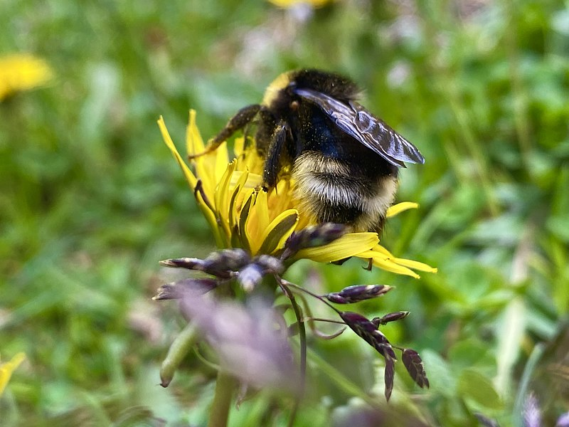

Dandelions are a resilient plant that can grow in many different conditions, inclduing many areas where other plants struggle to grow. They are also an important source of nourishment for birds and insects.
Dandelions are entirely edible, from their flowers to their leaves, roots, and stems. As a result, dandelions are found in cuisines around the world.